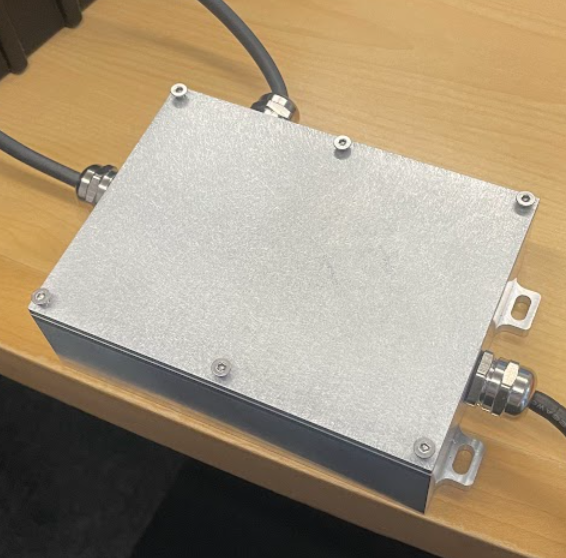
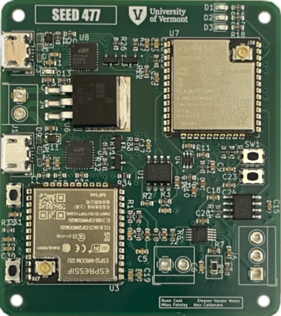
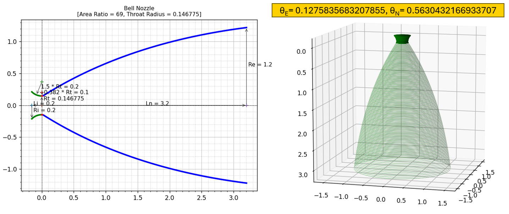
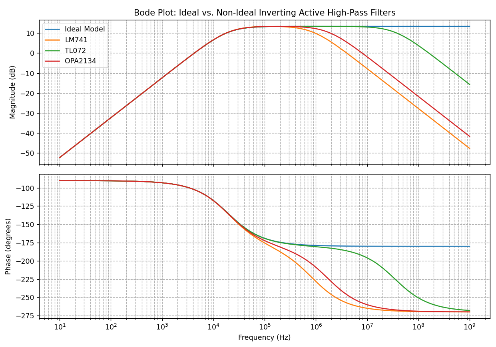
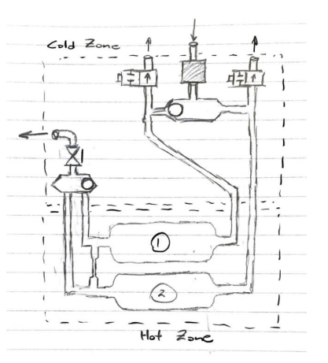

September 2025 - April 2026
Inductive Pressure Sensor - Signal Consitioner and Housing
This was the second year of a 2-year project partnering with Collins Aerospace. In this project we aimed to prove the feasibility of an Inductive Pressure Sensor to measure fuel in a Boeing 777X. Our team's objective was to shrink the signal conditioner, as well as increasing its accuracy, reliability, and MTBF. Housing was also designed to protect the signal conditioner from harsh environments, as well as allow connectivity to external components. Critical tests used to evaluate the design included.
View Info Poster

The final design is a single sealed aluminum enclosure containing a custom PCB built around two ESP32 microcontrollers. One controller is dedicated to generating a 976.5625 Hz excitation signal for the sensor, and the other is dedicated to sampling the sensor return, computing the inductance through a custom FFT-based algorithm, and broadcasting the result over CAN bus. A Python desktop dashboard reads the CAN bus and displays the live inductance and a derived fuel level. The CNC-machined Aluminum 6061 housing provides a gasketed, watertight enclosure with cable glands for the sensor, power, and CAN connections, and mounting tabs sized for 10-32 hardware standard to aviation manufacturing.
April 2025 - Present
Microcontroller Guided Robotic Arm
This project began as a solo design for a Embedded Systems project, but has continued with increased functionality. All parts were personally modeled and fabricated, and all software was written originally. At the end of stage one, the arm was controlled by a set of joysticks connected to the microcontroller. Servo motors controlled joints of the arm, and a stepper motor allowed rotation of the base. Stage 2 of the project was to make the arm controllable by an accelerometer mounted to a glove, communicating via bluetooth.
April 2026
CFD Analysis of RS-25 Nozzle Efficiency at Varying Backpressure
In this 2D Axisymmetric study we examined the behavior of flow exiting an RS-25 Nozzle at backpressures experienced during the Artemis II mission using ANSYS Fluent. Because the RS-25 nozzle did not have published geometry, the first step of this project was to recreate the nozzle using known combustion chamber conditions and a given area ratio. This allowed for the derivation of curve defining the boundary of the nozzle. Using real-time flight data from Artemis II ascension, the backpressure experienced as a function of time was determined and input to Fluent as a variable boundary condition. This allowed us to determine the thrust production of the RS-25 nozzle during the span of the Artemis II ascension. Despite adequate convergence at each time step time constraints meant ideal number of iterations per time step could not be reached, so plume visualization has a high error potential.

*Animations are not viewable in PDF Presentation
April 2025
Ideal vs. Non-Ideal Models of Active Filters
This project examined the inaccuracies that occur when Operational Amplifiers in systems are modeled as ideal. To see the differences in behaviors, and active high-pass filter was modeled with an LM741, TL072, OPA2134, then with an ideal Op-Amp. These systems were then run through a numerical analysis and behaviors were examined. Results showed that within a certain bandwidth of frequencies the Ideal model could be considered an accurate approximation, however outside of that, drastic variation occurred.

May 2026
Gas Dryer V2 Productization Proposal
The objective of this 3-day project was to design the concept for a renewed gas dryer using a dual tower swing architecture meeting strict output requirements. Air exiting this system was required to contain <1ppm of water and <0.1ppm total hydrocarbons, while operating at 800mbar. The system itself was required to fit within a 11"x13"x5.5" envelope and be fully autonomous for at least 1 month. The proposed design was similar in architecture to existing dual tower swing designs, with two key exceptions. The desiccants used were layered with specific materials, and swing architecture was triggered by downstream conditions as opposed to the usual timing system. This method ensured no hysteresis or thermal runaway occurred in the system, and NVM ensured that it was resistant to unexpected power loss.
